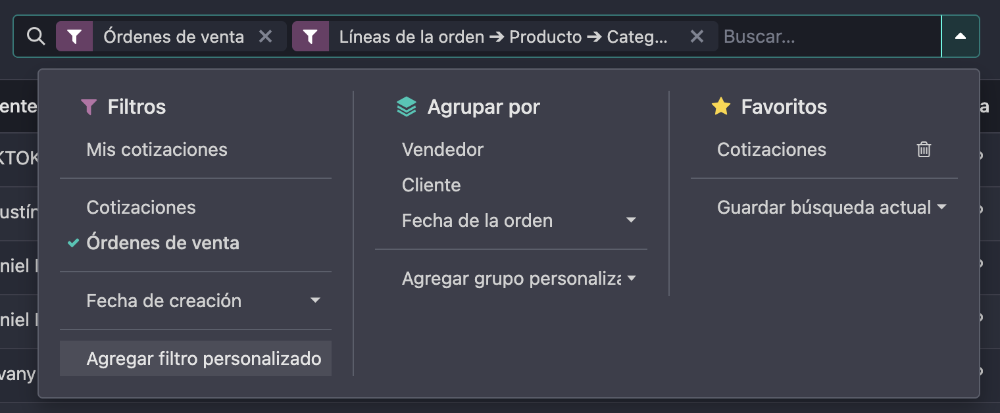
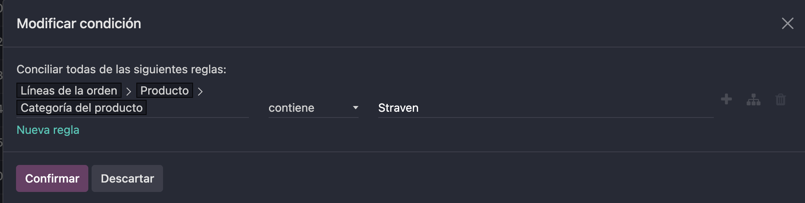
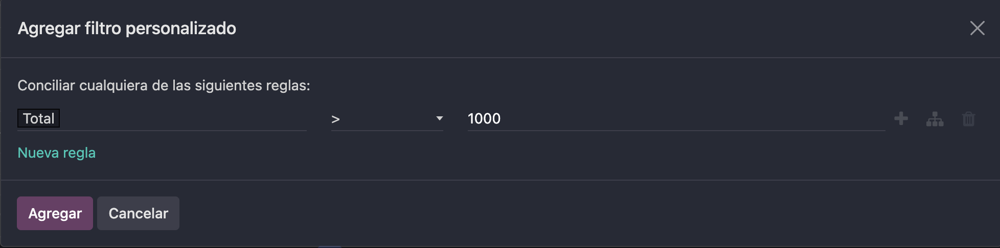
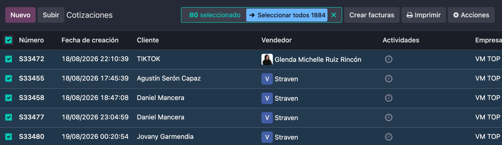
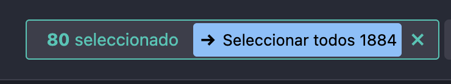
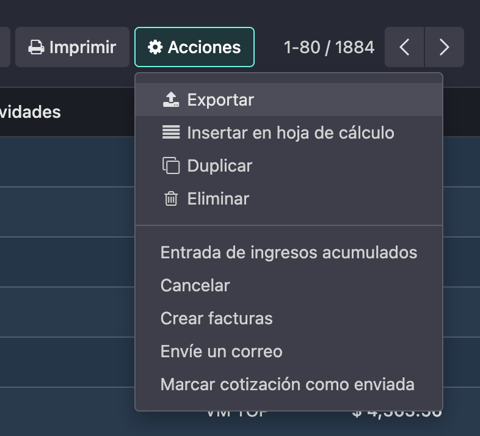
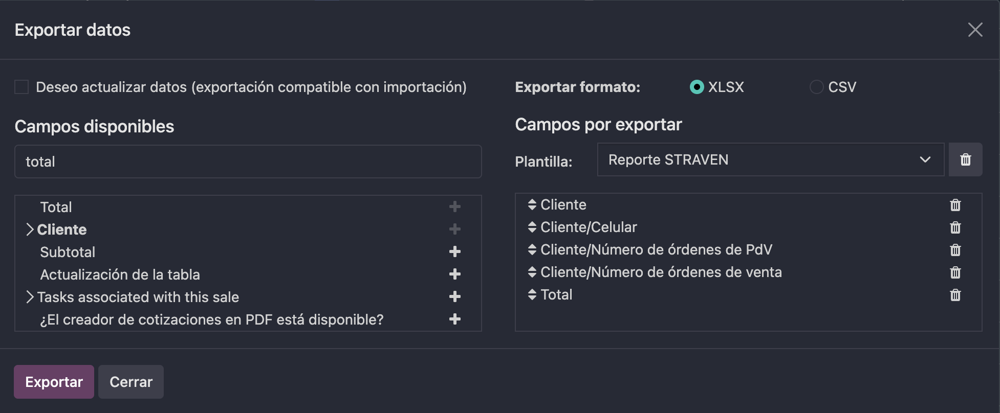
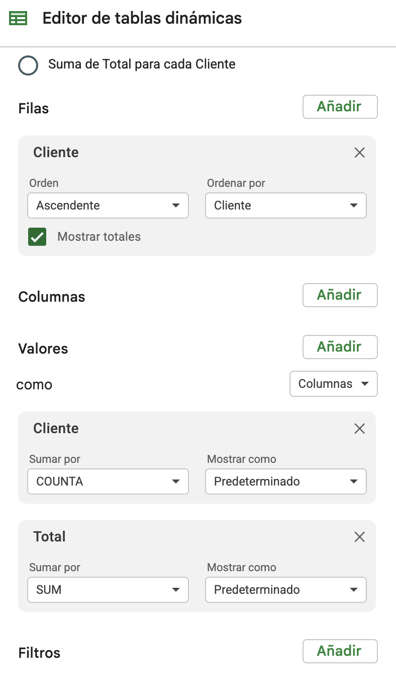

Cómo generar un reporte de clientes que han comprado una cantidad determinada de productos de STRAVEN
Esta guía explica, paso a paso, cómo usar Odoo para identificar qué clientes han comprado productos de STRAVEN, cuántas veces le han comprado (en tienda física y por vendedora) y filtrar ese listado por monto de compra. Es la herramienta base para armar campañas de recompra, identificar clientes frecuentes y medir el comportamiento de compra al mayoreo.
Entra al apartado de VENTAS en Odoo y posiciónate en ÓRDENES con la vista de "Lista". Desde ahí vas a construir el filtro que te va a dar el listado base para el reporte.
En el filtro vas a colocar "Órdenes de venta" y luego vas a presionar sobre "Filtro personalizado".

El filtro lo vas a personalizar de la siguiente forma:
- Regla: Líneas de la orden → Producto → Categoría del producto
- Condición: contiene
- Valor: Straven

Producto > Categoría del producto contiene Straven">Agrega un segundo filtro con el monto total que quieres que te muestre el listado. Por ejemplo, si solo quieres ver cotizaciones con un monto superior a $1,000, tienes que crear un filtro personalizado adicional de ">1000" sobre el campo Total.

1000">Con los filtros ya aplicados (categoría STRAVEN + monto, si lo usaste), el siguiente paso es descargar ese listado como archivo Excel.
- Primero haz click sobre el checkbox padre (la casilla de la esquina superior izquierda de la tabla) para seleccionar las órdenes visibles en la página.
- Odoo te va a ofrecer seleccionar todas las órdenes que cumplen el filtro, no solo las de la página actual. Haz click en "Seleccionar todos" para incluir el listado completo.


Con todo seleccionado, da click en el botón "Acciones" y luego en "Exportar".

En la ventana de "Exportar datos", selecciona la plantilla que ya está creada llamada "Reporte STRAVEN" y descarga en formato XLSX.

El archivo que descargaste te va a entregar 5 columnas:
| Columna | Qué significa |
|---|---|
| Cliente | Nombre del cliente. |
| Cliente/Celular | Número de contacto del cliente. |
| Cliente/Número de órdenes de PdV | Cuántas veces ha comprado ese cliente en la tienda física (Punto de Venta). |
| Cliente/Número de órdenes de venta | Cuántas veces le ha comprado ese cliente por medio de una vendedora (Órdenes de venta). |
| Total | Monto de cada orden individual. |
Para generar el reporte agrupado por cliente, vas a crear una Tabla dinámica en la celda H1 configurada de la siguiente manera:
- Filas: agrega el campo Cliente, orden ascendente, ordenado por Cliente, con la casilla "Mostrar totales" activada.
- Valores → Cliente: sumar por COUNTA (esto cuenta cuántas órdenes tiene cada cliente).
- Valores → Total: sumar por SUM (esto suma el monto total comprado por cada cliente).

Una vez armada la tabla dinámica, vas a tener, por cada cliente, cuántas veces ha comprado en total (sumando PdV + Órdenes de venta) y el monto total que ha gastado en productos STRAVEN.
- Para saber si un cliente ha comprado una cantidad determinada de veces, ordena la tabla dinámica de mayor a menor por la columna de conteo (COUNTA) y filtra visualmente el umbral que necesites (por ejemplo, clientes con 3 o más compras).
- Recuerda que las columnas Número de órdenes de PdV y Número de órdenes de venta del archivo original te permiten distinguir si esas compras fueron en tienda física o con una vendedora, algo que la tabla dinámica no separa por defecto.
Documento vivo — se irán agregando más secciones conforme se definan nuevos procesos. · STRAVEN · Uso interno.